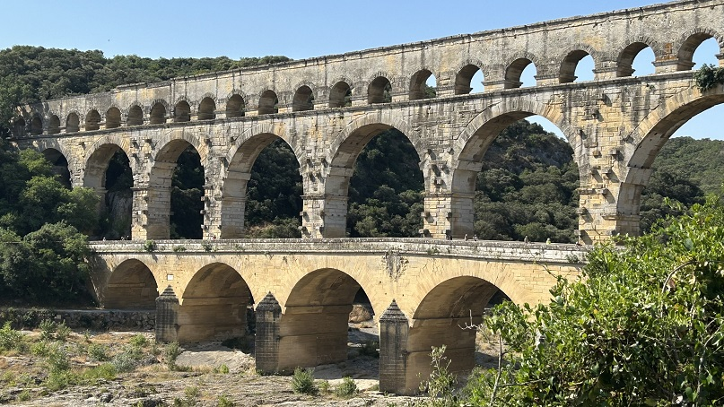
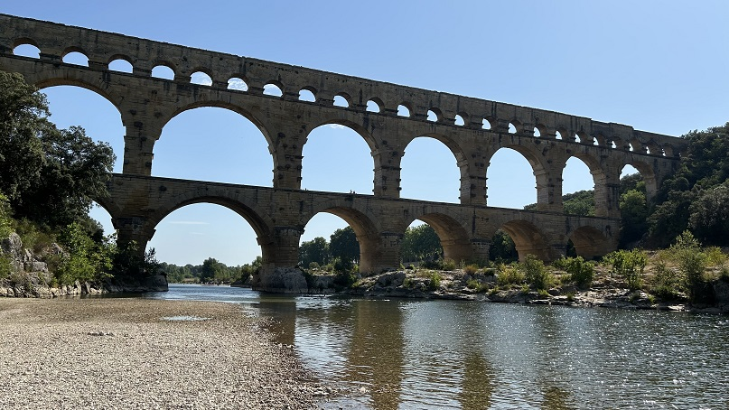

|
Pont du Gard
El Pont du Gard se construyó en el
siglo I, su construcción se le atribuye a M. Agripa. Tiene una longitud
de 275m y está compuesto por 52 arcos superpuestos en tres filas,
alcanzando una altura de 49m. Es puente acueducto romano más alto del
mundo.
Pertenecía al acueducto que llevaba agua a la Nimes romana, Nemausus,
desde un manantial en Uzès a 50km. Atraviesa el río Gard. Se encuentra
junto al pueblo de Remoulins, en el departamento de Gard.
Su caudal era de alrededor 20.000m3 al día.
A partir del siglo IV se abandona su mantenimiento y en el siglo IX los
sedimentos calcáreos terminan por obstruir definitivamente el conducto.
Era usado como puente que facilitaba el tráfico a pie para atravesar el
río. Los pilares del segundo nivel vieron reducido su grosor para hacer
más espacio para el tráfico, pero esto hacía peligrar la estabilidad de
la estructura. En 1702 los pilares fueron restaurados a su grosor
original para salvaguardar el acueducto. En 1743 se construyó un nuevo
puente junto a los arcos del nivel inferior, de tal forma que el tráfico
rodado pudiese cruzar por allí.
Patrimonio de la Humanidad.


Nosotros accedimos por la margen
izquierda. Más info: Web oficial
|